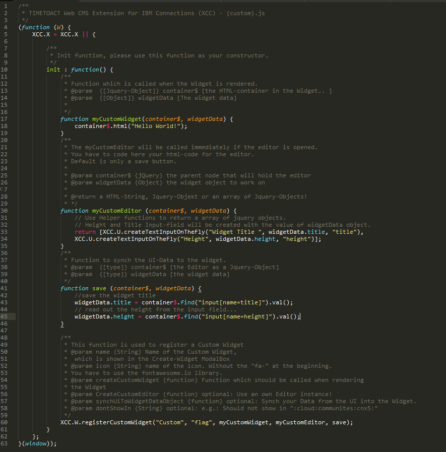

Creating a custom widget with the custom widget API
You can copy an existing widget or modify an existing widget to create a new widget using the custom widget API. You can upload a JavaScript file to have access to the Connections Engagement Center. This is necessary for the Custom widget API. The widget API is the only API and where JavaDoc-level documentation is stored.
Copying an existing widget
You can copy any existing widget with the following steps:
- Open an existing HCL Connections Engagement page using the debugging parameter:
xccdebug=true. For example, https://apps.<yourLocale>.collabserv.com/xcc/main?xccdebug=truehttps://<yourHostname>/xcc/main?xccdebug=true. This page should contain the widget you want to copy. - Open an existing HCL Connections Engagement page using the debugging parameter:
xccdebug=true. For example, https://apps.<yourLocale>.collabserv.com/xcc/main?xccdebug=truehttps://<yourHostname>/xcc/main?xccdebug=true. This page should contain the widget you want to copy. - Open the Developer Tools in your browser and copy the JavaScript file (for example, News.js, for the Newswidget). Or, you can go to installedApps/icec.ear/icec.war/js/widgets/ and copy the complete JavaScript for the specific widget.
- Upload the modified widgetCopy.js to Connections Engagement Center.
- Use the Custom widget API to register your widgetCopy and assign the edit configuration to the registerwidget function.
-
Sometimes you need to call widgets with multiple parameters, that are not available via the Custom widget API. You can calculate these parameters on your own. Look into the widgets JavaScript file and you should see all parameters like CCS (Communities Content String), preSelectedPosts, and contentStreams:
/** * <b>Communities Content String:</b> * <p>Contains the selected community data, like uid, name and * url to specific community.</p> */ cCS = data.communitiesContentString ? JSON.parse(data.communitiesContentString) : "", /** * <b>Content Streams:</b> * <p>Includes all widget channels and their settings (channel name(s), * community name, community uuid etc.). Of course <code>contentStreams</code> * includes variable <code>items</code>.</p> */ contentStreams = data.contentStream, /** * <b>Previously selected posts:</b> * <p>Includes all selected posts / pages of a specific channel.</p> */ preSelectedPosts = null
Example: custom.js
/**
* Connections Engagement Center - {custom}.js
* @copyright Copyright IBM Corp. 2017, 2017 All Rights Reserved
*/
(function (W) {
XCC.X = XCC.X || {
/**
* Init function, please use this function as your constructor.
*/
init : function() {
/**
* Function which is called when the widget is rendered.
* @param {[Jquery-Object]} container$ [the HTML-container in the widget.. ]
* @param {[Object]} widgetData [The widget data]
* */
function myCustomwidget(container$, widgetData) {
container$.html("Hello World!");
}
/**
* The myCustomEditor will be called immediately if the editor is opened.
* You have to code here your html-code for the editor.
* Default is only a save button.
*
* @param container$ {jQuery} the parent node that will hold the editor
* @param widgetData {Object} the widget object to work on
*
* @return a HTML-String, Jquery-Object or an array of Jquery-Objects!
* */
function myCustomEditor (container$, widgetData) {
return [XCC.U.createTextInputOnTheFly("widget Title ", widgetData.title, "title"),
XCC.U.createTextInputOnTheFly("Height", widgetData.height, "height")];
}
/**
* Function to synch the UI-Data to the widget.
* @param {[type]} container$ [the Editor as a Jquery-Object]
* @param {[type]} widgetData [the widget data]
*/
function save (container$, widgetData) {
widgetData.title = container$.find("input[name=title]").val();
widgetData.height = container$.find("input[name=height]").val();
}
/**
* This function is used to register a Custom widget
* @param name {String} Name of the Custom widget,
* which is shown in the Create-widget ModalBox
* @param icon {String} name of the icon. Without the "fa-" at the beginning.
* You have to use the fontawesome.io library.
* @param createCustomwidget {function} Function which should be called when rendering
* the widget
* @param CreateCustomEditor {function} optional: Use an own Editor instance!
* @param synchUiToWidgetDataObject {function} optional: Synch your Data from the UI into the widget.
* @param dontShowIn {String} optional: e.g.: Should not show in ":cloud:communites:cnx5:"
*/
XCC.W.registerCustomWidget({
id: "Custom",
name: XCC.L.get("widgetType_custom", "Custom"),
icon: "flag",
createCustomwidget: myCustomwidget,
customEditor: myCustomEditor,
synchUiToWidgetDataObject: save
});
XCC.X.NewsSliderCopy();
},
NewsSliderCopy: function() {
var editor = {
titlePlaceholder: true,
personalization: true,
input: [{
type: "check",
label: XCC.L.get("icec_sliding", "Sliding"),
name: XCC.L.get("icec_slide_automatically", "Slide automatically"),
key: "autosliding",
events: {
name: "click change",
callback: function(e) {
var this$ = $(e.currentTarget),
tElem$ = this$.parents(".row2").first().find("[name=slidingspeed]").parents("label");
if (this$.is(":checked")) {
tElem$.show();
} else {
tElem$.hide();
}
}
}
},
{
type: "text",
label: "# Items",
key: "itemcount"
},
{
type: "check",
label: XCC.L.get("icec_contentCreation", "Content Creation"),
name: XCC.L.get("icec_allow", "Allow"),
key: "allowContentCreation"
},
{
type: "text",
label: XCC.L.get("icec_slidingspeed", "Slidingspeed (ms)"),
isHidden: true,
key: "slidingspeed"
}],
channel: {
maxChannel: 20,
channelName: true,
aggregation: true,
autocompleteSource: "Blog",
sourceName: XCC.L.get("icec_source", "Source"),
showPosts: XCC.L.get("icec_widget_channel_showPosts_latest", "Latest") + "," + XCC.L.get("icec_widget_channel_showPosts_selected", "Selected")
}
};
function newsSliderwidget(container$, widgetData) {
widgetData.contentType = widgetData.contentType.trim();
XCC.require(["/xcc/rest/public/custom/NewsSlider-Copy.js"], function(newsSlider) {
newsSlider(widgetData, container$, JSON.parse(widgetData.communitiesContentString), widgetData.contentStream);
});
}
XCC.W.registerCustomWidget("NewsSliderCopy", "quote-right", newsSliderwidget, editor);
}
};
}(window));
Example: NewsSlider-Copy.js
/**!
* NewsSlider Copy - TIMETOACT Web CMS Extension for HCL Connections (XCC)
*
* Renders a Blog-Entry in a Slider.
* Embedded Experience is active. There can be more Channels and selected Posts!
* Since V8 this widget exists and can aggregate different Channels..
* Modified: Now with Tabs for different Channel Names..
* <p>Create a News Slider widget. You can select items for a slider.</p>
*
* @copyright 2012-2017 TIMETOACT Software & Consulting GmbH, Cologne, Germany
* @license ALL RIGHTS RESERVED
*
* @author Christian Luxem (CLU) & Carlo Nölle (CNO)
* @depends jQuery
*****************************************************************************/
/*jslint browser:true,white:true,multivar:true,this:true,fudge:true,single:true*/
/*global XCC, jQuery, window*/
/*exported createNewsSlider, newsSilderEditor */
(function ($, W) {
"use strict";
var X = W.XCC = W.XCC || {}; // get or create and expose the XCC Object
// define this function in dependency of slider and NewsTools
X.define(["tabs", "slider", "newsTools"], function (createTabs) {
function createNewsSlider(data, wBox$, cCS, contentStreams) {
var lCs = data.contentStream[0],
lCCs = cCS[0],
pagesize = 100, // default length to show!
deferredArr = [],
selfArgs = Array.prototype.slice.call(arguments),
renderedTabs = [],
idBase = "xf-" + (new Date()).getTime() + "-";
if (X.W.warnIfSelectedAndNoSelection(data, contentStreams, wBox$) || lCCs.length === 0) {
return;
}
// now that we have determined the pagesize, we will be happy for
// most of the cases: the pagesize is optimal here and we will have
// very small requests, that will make the widget very perfromant
// but we get easily to the limits. Consider the following case:
// - you select entries 2, 4, 5 from teh current posts list
// - your pagesize will become 3
// - you will get a feed that contains the entries 1, 2, 3
// - we will find only entry 2 and will not be able to display
// entry 4 and 5
// -- now even consider the situation where 20 new entries will have
// been created
// solution: use paging if necessary
// - put the call into a recousrive function, that will continue
// getting the next page until all entries have been found or no
// more pages are available
function xccFilesChannelConfCallback(cCS, qlTabs$, qlRoot$) {
var cS = contentStreams || JSON.parse(cCS);
$.each(cS, function(i,e){
var isRendered = false,
renderedIndex;
$.each(renderedTabs, function(y,x){
if(x.name === e.name){
isRendered = true;
renderedIndex = y;
return false;
}
});
if(!isRendered){
renderedTabs.push({name: e.name, entrys: e.entry});
qlTabs$.append('<li data-slider="' + ((i > 0) ? "in" : "active") + 'active"><a href="#' + idBase + i + '">' + X.T.sanitizeHTML(e.name) + "</a></li>");
// Append body Container to Files Content element
qlRoot$.append(
$("<div>", {
id : idBase + String(i),
"class" : "qlC",
"data-type" : "ql-container",
"data-channel" : i,
"data-channelName": e.entry.length ? e.entry[0].commId : "",
"data-pagesize" : pagesize,
"data-itemcount" : lCs.itemCount,
"data-show-selected" : true
}).append(
$("<div>", {
rel : "ul",
"data-channel" : i,
"data-pagesize" : pagesize,
"data-channelName": e.name,
"data-itemcount" :lCs.itemCount,
"data-show-selected" : true
})
)
);
}else{
$.each(e.entry, function(c,v){
renderedTabs[renderedIndex].entrys.push(v);
});
}
});
} // END xccFilesChannelConfCallback
function renderwidget(blogData, ul$) {
ul$.empty();
var slick$ = $('<div class="xccNewsSlider" style="display:none;"></div>').appendTo(ul$),
i = 0,
show2Slides = ul$.width() > 499,
countEntrys = 0,
maxPageCount = (XCC.T.getCustomPropertyValue("itemcount", data) || 100);
$.each(blogData, function(j, post) {
// fix the http/https issue on client side - not
// the best idea, but working
// if we are on http, we need to assure http
// if we are on https, we need to assure https
var isInTab = false;
$.each(renderedTabs, function(i,e){
if(e.name === ul$.attr("data-channelName")){
$.each(e.entrys, function(j,x){
if(countEntrys + "" === maxPageCount){
return false;
}else if(x.commId === post.bloguid){
countEntrys = countEntrys + 1;
isInTab = true;
return false;
}
});
return false;
}
});
if(isInTab){
var media,
sourceLink = X.S.sourceLink ? ('<a target="_blank" href="'+ post.commLink + '">' + post.blogTitle + "</a>") : post.blogTitle,
ahref = X.S.mobile ? X.SCP.B.getBlogsSingleEntry(post.bloguid, post.alternateHref.split("/entry/")[1].split("?lang=")[0]) : post.alternateHref;
// we need the counter in a higher closure..
i = j;
if (post.image) {
// data-lazy for lazy loading of images!
media = '<img class="newsChannelImage" alt="' + post.imageAltText + '" data-src="' + post.image.replace(/^(http:|https:)/, window.location.protocol) + '"/>';
} else if (post.video) {
media = '<div class="video-container">' + post.video + "</div>";
} else {
if (post.blogType === "community") {
media = '<img alt="communityImage" class="newsChannelImage" data-src="'
+ X.T.getRootPath("Communities", X.S.anon)
+ "/service/html/image?communityUuid="
+ post.bloguid + '"/>';
} else { // if we dont have an blog.uid e.g in Standalone Blogs..
// Show an blank image...
media = '<img alt="" class="newsChannelImage" data-src="'
+ "/xcc/css/images/ecblank.gif"
+ '"/>';
}
}
slick$.append(
$(['<div class="xccEntry clearfix" data-href="',
post.alternateHref,
'" data-anchor="',
post.href, '">',
'<div class="newsChannelContainer clearfix">',
X.T.parseHTMLContent(media),
"</div>",
'<div class="newsChannelContent clearfix">',
'<p class="xccTimestamp">',
post.publishedTime,
"</p>",
(data.contentStream.length === 1 || !post.commLink || !post.blogTitle) ?
"" : ('<h4 class="xccSource">'
+ sourceLink
+ "</h4>"),
'<h3 class="xccHeadline">',
'<a target="_top" href="',
ahref,
'">',
post.title,
"</a>",
"</h3>",
'<p class="newsChannelTeaser">',
post.content,
"</p>",
"</div>"].join("")).click(function(e) {
var url = $(this).find(".xccHeadline a").attr("href");
if (X.S.cloud) {
url = url.replace(X.S.endPoint, X.S.endPointProxy);
}
X.N.newsThumbBrowserClick(e, url, post, data);
})
).find(".xccSource a").click(function (e) {
X.N.openSourceLink(e, post.bloguid);
});
}
});
// we don't create an slider if we have only one slide...
if (i > 0) {
var slidingSpeed = X.T.getXccPropertyByName(data, "slidingspeed") ? X.T.getCustomPropertyValue("slidingspeed", data) : 1500,
autoSliding = (X.T.getXccPropertyByName(data, "autosliding") && X.T.getCustomPropertyValue("autosliding", data));
slick$.show().on("init", X.T.initSlickSlider).slick({
arrows: true,
autoplay: autoSliding,
autoplaySpeed: slidingSpeed,
centerMode: show2Slides,
centerPadding: "200px 0 0",
responsive: [
{
breakpoint: 768,
settings: {
arrows: false,
centerMode: false,
adaptiveHeight: true
}
}
]
}).find("img").unveil(200);
} else {
// CSS for only one Slide...
slick$.show().children().css({
"overflow" : "hidden",
"height" : "175px",
"margin-top" : "0"
});
slick$.parent().find("img").unveil(200);
}
if (data.contentStream.length) {
// render a create content Button if applicable
X.N.renderContentCreation(data, wBox$, createNewsSlider, selfArgs, {
target: "Target",
title: "Title",
titlePlaceholder: "Enter Title",
btnSource: "Source",
btnRichtext: "RichText",
btnPreview: "Preview",
entryPublished: "Entry published",
errorEntryPublished: "Error publishing Entry",
msgFormInclomplete: "Please fill all Fields",
dialogTitle: "Create new News",
dialogBtnCreate: "Create News",
dialogButtonCancel: "Cancel"
});
}
} // END renderwidget
function loadData(context){
X.N.aggregateNews(wBox$, pagesize, data, deferredArr, cCS, renderTabs);
function renderTabs(feedData){
var filteredPosts = [];
$.each(feedData.posts, function(i,e){
var isFiltered = false;
$.each(filteredPosts, function(x,v){
if(e.postId == v.postId){
isFiltered = true;
return false;
}
});
if(!isFiltered){
filteredPosts.push(e);
}
});
filteredPosts.sort(function(a,b){
return moment(b.publishedTime).valueOf() - moment(b.publishedTime).valueOf();
});
context.done(filteredPosts);
}
} // END loadData
createTabs({
channels : cCS,
channelConfig : xccFilesChannelConfCallback,
renderData : renderwidget,
loadData : loadData,
wBox$ : wBox$
});
} // END createNewsSlider
// expose functions
return createNewsSlider;
});
} (XCC.jQuery || jQuery, window));
Modifying a widget only (instead of copying)
- Open an existing HCL Connections Engagement page using the debugging parameter:
xccdebug=true. For example, https://apps.<yourLocale>.collabserv.com/xcc/main?xccdebug=truehttps://<yourHostname>/xcc/main?xccdebug=true. This page should contain the widget you want to copy. - Open an existing HCL Connections Engagement page using the debugging parameter:
xccdebug=true. For example, https://apps.<yourLocale>.collabserv.com/xcc/main?xccdebug=truehttps://<yourHostname>/xcc/main?xccdebug=true. This page should contain the widget you want to copy. - Upload that file to the Connections Engagement Center.
- Look into the JS Object
XCC.requirejs.s.contexts._.config.pathsin the developer console and find the module/widget you want to replace. - Copy
XCC.requirejs.s.contexts._.config.paths.MODULENAME = "/xcc/rest/public/custom/YOURMODIFIEDJSFILE;"" into the init function of the custom.js
Custom widget example
This is the whole code you need to write for a Hello World widget:

Registering a custom widget
To register your custom widget you have to call the following function in the init-function of the custom.js:
The first parameter must be a string. It will represent the name of the widget in the list of widgets in the adminpanel if you click on the button Create widget.
The second parameter must be also a string. It will represent the icon of the custom widget in the admin panel. The icon set is from www.fontawesome.io . You only need to add the name of the icon. For example, if you want to have the comment icon, you have to write only comment instead of fa-comment.
The third parameter should be your callback function, which will be called if the widget is loaded. This function will get two parameters. The first parameter is the widget container as a jquery-object. The second parameter is the widget configuration as an object.
The fourth parameter should be your callback function for the edit area. Here you can use a lot of Libraries, like Bootstrap, Jquery UI, etc. Also there are some Connections Engagement Center functions, which will help you to reach the same layout as the normal widget editors. A Save - button is automatically rendered into the editor. Your callback function will get also two parameters: The first is the edit area as a jquery-object, the second parameter is the widget configuration-object. Within the widget configuration you can fill your input fields in the edit area, like title or height.
The fifth parameter should be your callback function for the Save button. Your callback function will get two parameters. The first is the edit area as a jquery-object, the second parameter is the widget configuration-object. You have to read out the data of your custom editarea and save them into the widget configuration.
The sixth parameter is optional. Here you can specify in which Connections Engagement Center-Mode the widget will be shown. By default the widget will be available in all Connections Engagement Center-Modes.
Parent topic:Overview